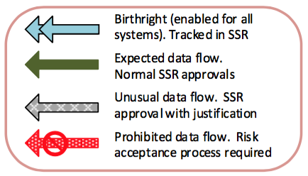
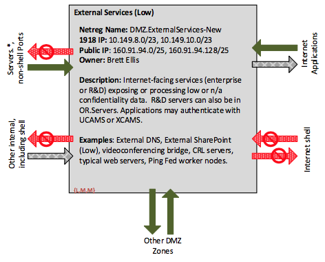
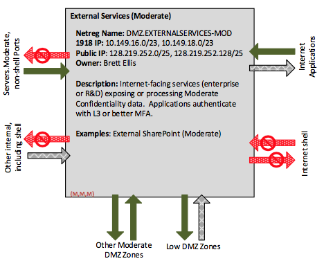
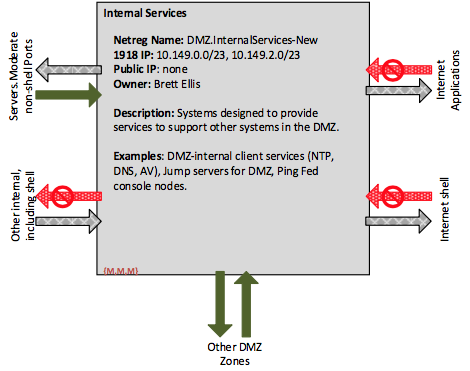
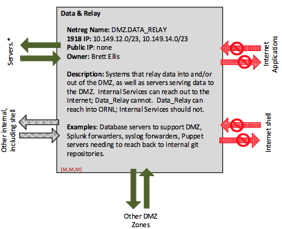
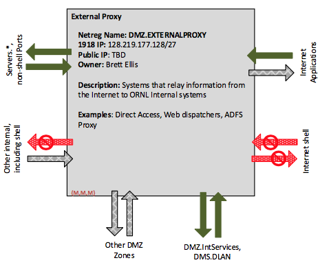
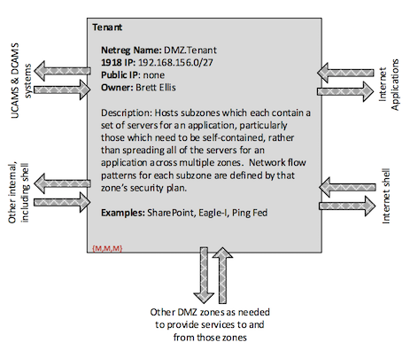
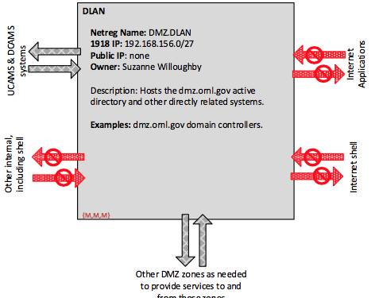

DMZ Enclave
ORNL Internal Use Only
Topics
DMZ Enclave Overview
The DMZ enclave includes the systems that provide services to systems and users outside ORNL, as well as the systems needed to support those externally-facing services. Systems with inbound firewall exceptions must be in the DMZ, Open Research, or Supercomputing.
Physical Locations: Only in IT managed server rooms with physical access control.
Wireless: None
Authentication in the DMZ
Systems in the DMZ use DCAMS for account management, and all DCAMS accounts are considered privileged. There are no systems in the DMZ where standard user interactive login is permitted (with the possible exception of DMZ.Tenant system). Note that remote access systems are part of the Workstations enclave, both from an account management perspective and so that users in remote access systems have access to other ORNL systems as if they were in the Workstations enclave. See, for example, Login Servers
Windows
- Windows systems must be joined to the DMZ domain. Previous DMZ versions allowed extranet joined systems in the DMZ, but Extranet joined systems must either be moved to the dmz domain or moved to the OR.Servers zone.
- Windows systems in the DMZ should use Smart Card (Level 4) for interactive login (e.g. RDP). Username/password is permitted for service accounts and for very rare cases where an administrator must log in using a service account. Note that it may be possible to bind an administrator’s Smart Card to the service account, so that interactive login is done using the smart card, but the service account otherwise uses a username/password. In many cases, Windows systems in the DMZ will be configured to support smart card authentication for interactive logins, but not require it. In such cases, Level 4 authentication is enforced by a jump server.
- Service accounts should be DCAMS-managed service accounts. Service accounts may be machine-local, with appropriate system documentation.
- Operating system interactive accounts should be limited to system and application administrators.
- Remote Desktop Protocol (RDP) access from internal networks should be via a jump server. If a system is configured to require smart card authentication, direct RDP access from other Enclaves can be approved as an unusual firewall exception, with clear justification.
- Where information must cross from ORNL-internal enclaves (ornl.gov domain) into the DMZ, the preferred pattern is for the internal system (typically in the Servers enclave) to have a DCAMS credential that it uses to authenticate to the DMZ system and push from Servers into the DMZ. Where that is not possible, the use of ornl.gov domain credentials in the DMZ must be documented through the Risk Acceptance process, and those credentials must be used for only that purpose.
UNIX/Linux
- Unix/Linux systems must use SecurID or other approved level 3 or level 4 for interactive ssh access, as well as for interactive use of sudo.
- Password-based authentication should only be permitted at the console and only with passwords meeting the requirements for IT privileged accounts.
- The preferred method of account control is a DCAMS agent.
- Ssh access from internal networks must be via a jump (login) server. If a system is configured for Level 4 authentication for all ssh access, direct ssh from WS.Moderate can be approved as an unusual firewall exception. Note that at present, the only Level 4 authentication is via the PIV card.
- Login as a uid 0 account must be attributable to a specific person using a DCAMS managed account.
- Interactive login using ssh keys to non-privileged accounts is permissible, but only from IT-managed jump servers.
- Machine-specific service accounts may be used. Where a service account must be used for communication between systems, a DCAMS account is preferred.
- No use cases have been proposed which require SAMBA in the DMZ.
Other Systems
- Where systems cannot use SecurID or other approved MFA for authentication, LDAP-based authentication to DCAMS managed accounts in LDAPD is permitted. However, interactive access to such systems must be through an IT-managed Level 4 jump server.
Applications
- Applications hosted on servers in the DMZ should use SAML or OAuth for authentication where practical. Direct use of LDAPX, smart card, and SecurID are allowed, but not preferred.
- Applications may authenticate using XCAMS or UCAMS credentials, as appropriate, noting that External Services (Moderate) applications must use multifactor authentication. Authentication using DCAMS is permitted, but only for cases where the application use is for privileged users only. As an example, the Ping Federate console is an application hosted in the DMZ which is only accessed by administrators. This console can (and should) use DCAMS managed credentials, with at least Level 3 MFA (Level 4 preferred).
DMZ Zones
The arrows in the flow diagrams below have the following meanings:

External Services (Low)
DMZ.ExtServicesLow provides Internet-facing services with Low Confidentiality data. Services with public data may be non-authenticated, such as public facing web sites. Services with non-sensitive data may authenticate using Level 1 credentials. Services with Low Confidentiality sensitive data should authenticate with Level 2 or better credentials.

External Services (Moderate)
DMZ.ExtServicesMod provides Internet-facing services with data up to Moderate Confidentiality. Where a service exposes both Low and Moderate Confidentiality data, the Low portion of the service may authenticate with Level 2 credentials. Services exposing Moderate Confidentiality data must use Level 3 or better multifactor authentication. The network flow patters for Moderate services is identical to that for Low. The difference is that a higher level of scrutiny should be given for any unusual firewall exceptions involving Moderate and requests for inbound firewall exceptions into Moderate must document how MFA is enforced.

Internal Services
DMZ.InternalServices can be used for three different types of systems: (1) those providing services to systems in the DMZ (such as DNS), (2) those retrieving information from the Internet to make that available to other ORNL systems (in the DMZ or other internal networks, such as software updates), and (3) components of Internet facing systems where those components should not have inbound firewall exceptions from the world (such as test/dev/QA versions of systems).
Examples of systems appropriate to DMZ.InternalServices:
- Client health servers (such as AV) and basic services, such as DNS and NTP.
- Software update servers, particularly those serving the DMZ, but also those serving other internal networks.
- Management consoles for Internet-facing software systems where that console is on a separate IP address
- Dev/Test/QA portions of Internet-facing systems where those portions should not be Internet facing. Note that some systems may need for QA to be Internet-facing, where the QA components of other systems should be internal access only. The system owner should decide whether the dev/test/QA components should be in an External Services zone (and potentially Internet facing or Internal Services. Note that just because a system is in an External Services zone, that system is not automatically Internet accessible. However, inbound exceptions from the Internet are Normal exceptions for External Services zones, whereas they are CISO exceptions for Internal Services. Putting something in Internal Services, then, provides an extra level of procedural control to prevent inadvertently opening a system up to the Internet.

Data & Relay
The Data & Relay zone is intended for systems which need to exchange information with ORNL internal networks. It is a higher risk environment than Internal Services, as Data & Relay is permitted to reach back into ORNL internal networks. However, Data & Relay is not permitted to reach out to the Internet.

Proxy
DMZ.Proxy is for systems which need to accept traffic from the Internet, perform some form of validation on that information, and pass that along to ORNL internal systems.

Tenant
The Tenant Zone contains SubZones for systems that either need to be self-contained in one network segment or which benefit from not having component devices spread out over multiple Zones. For example, the DMZ SharePoint implementation has systems that would otherwise be spread out across five different DMZ Zones. Instead, all of the virtual machines that make up SharePoint can be put into DMZ.Tenant.SharePoint. This also makes it easier to clone the entire subzone to make dev, test, QA, and prod environments.
As another example, the Eagle-I system is one which has some specific controls and security plan implications and needs to be separated from other DMZ systems. It may, for example, use credentials which are unique to this system, overriding the default policies for the DMZ. The DMZ.Tenant.EagleI subzone can then be used both to collect the computers (physical or virtual) that make up this system, isolate those computers from the rest of the DMZ, and have a security plan (control set) that overrides only those controls needed to meet the Eagle-I requirements while inheriting all those which are appropriate to this particular system.

DLAN
DLAN is exclusively for the dmz.ornl.gov Active Directory domain controllers and directly related systems.
